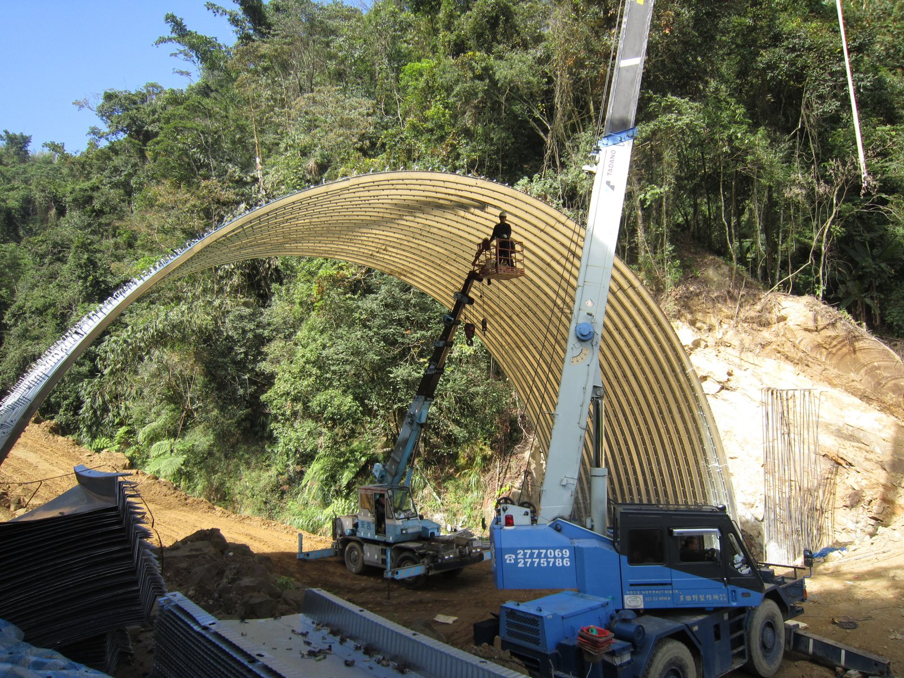
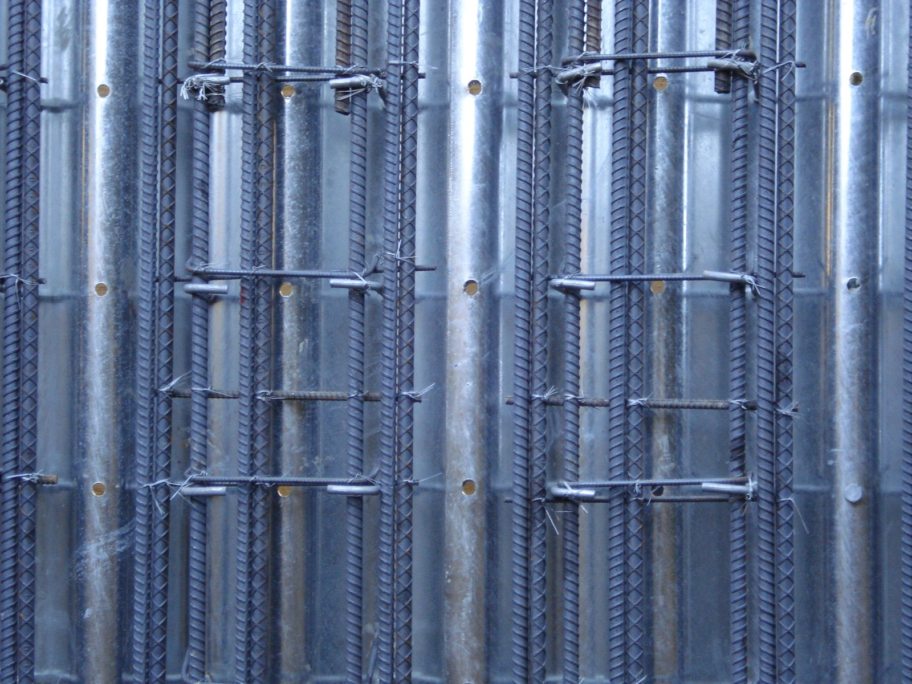
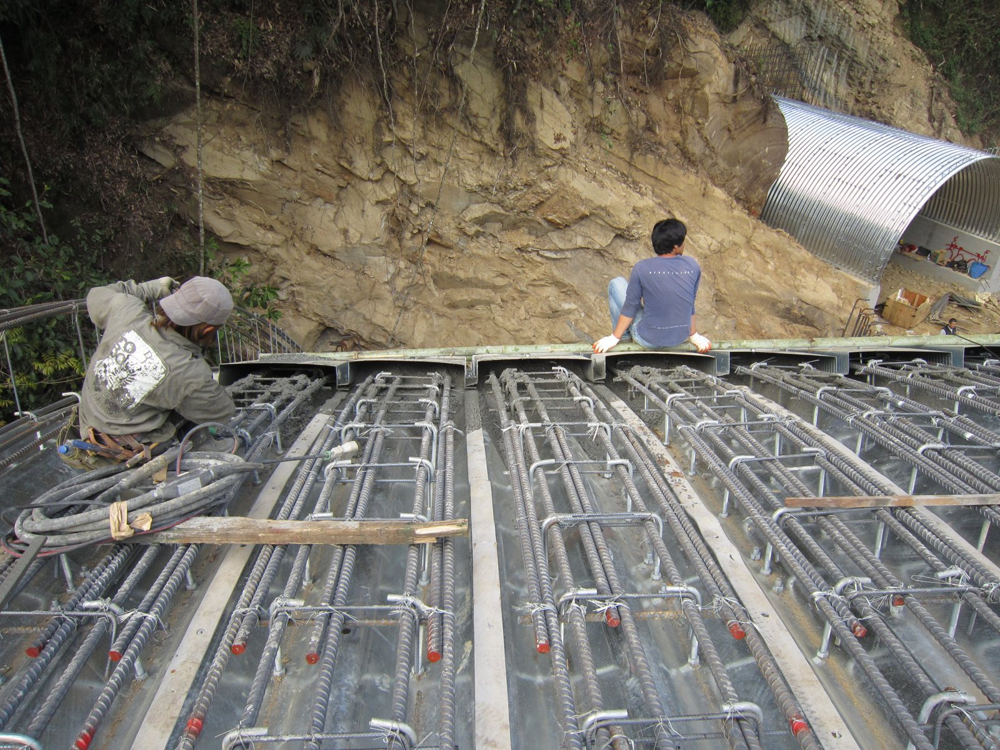
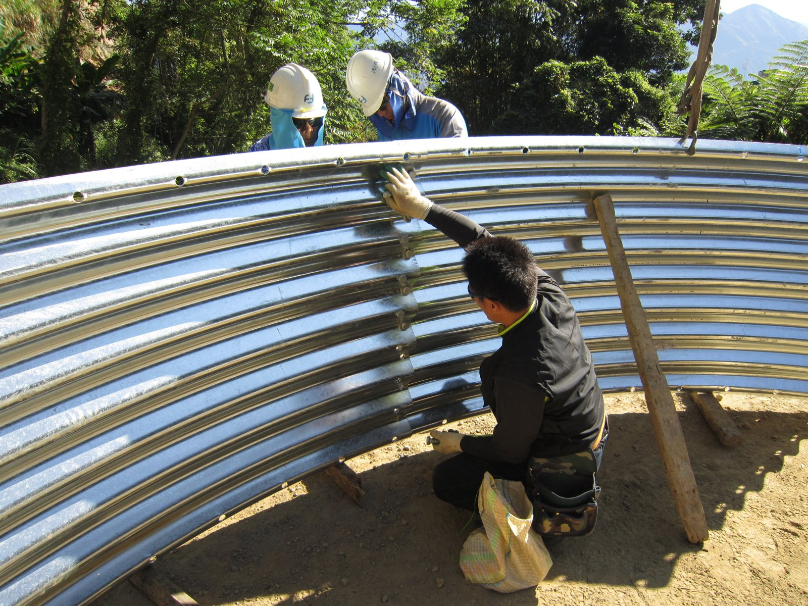
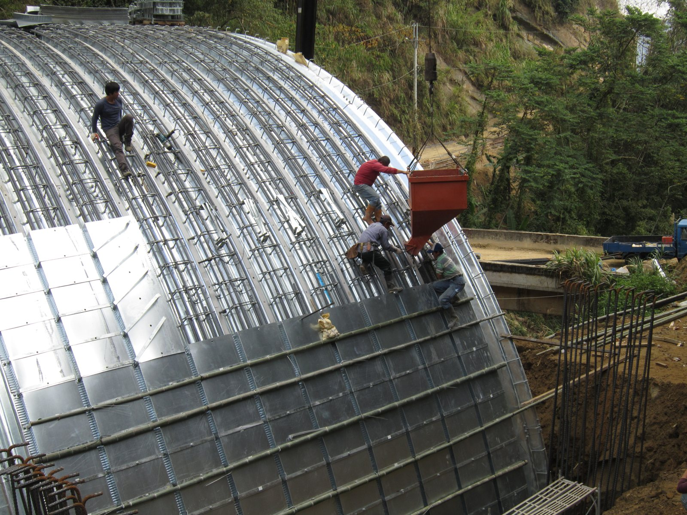
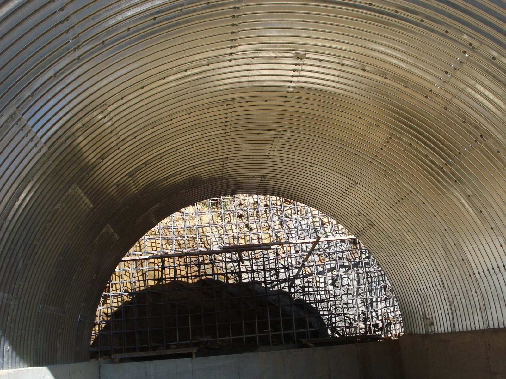
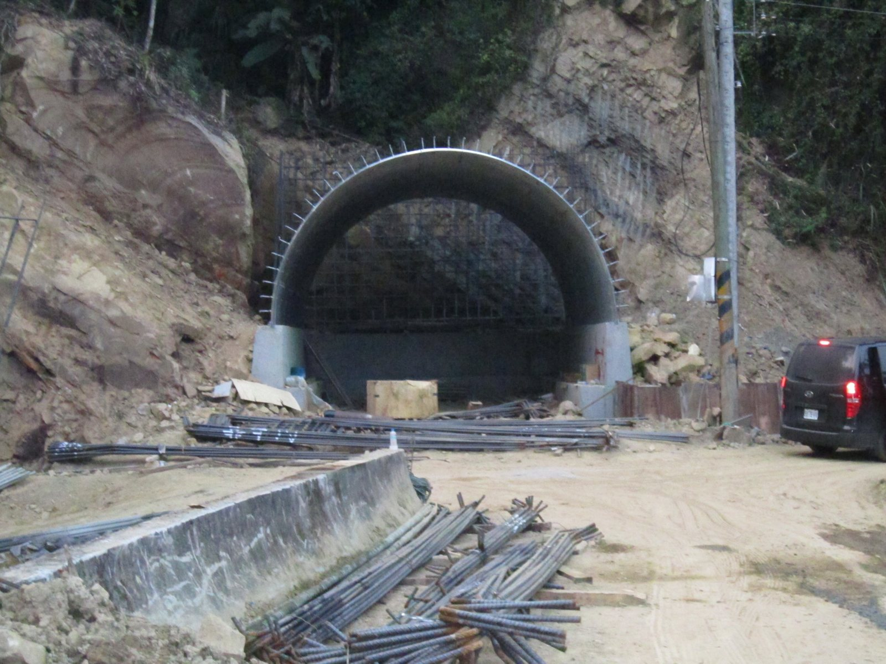
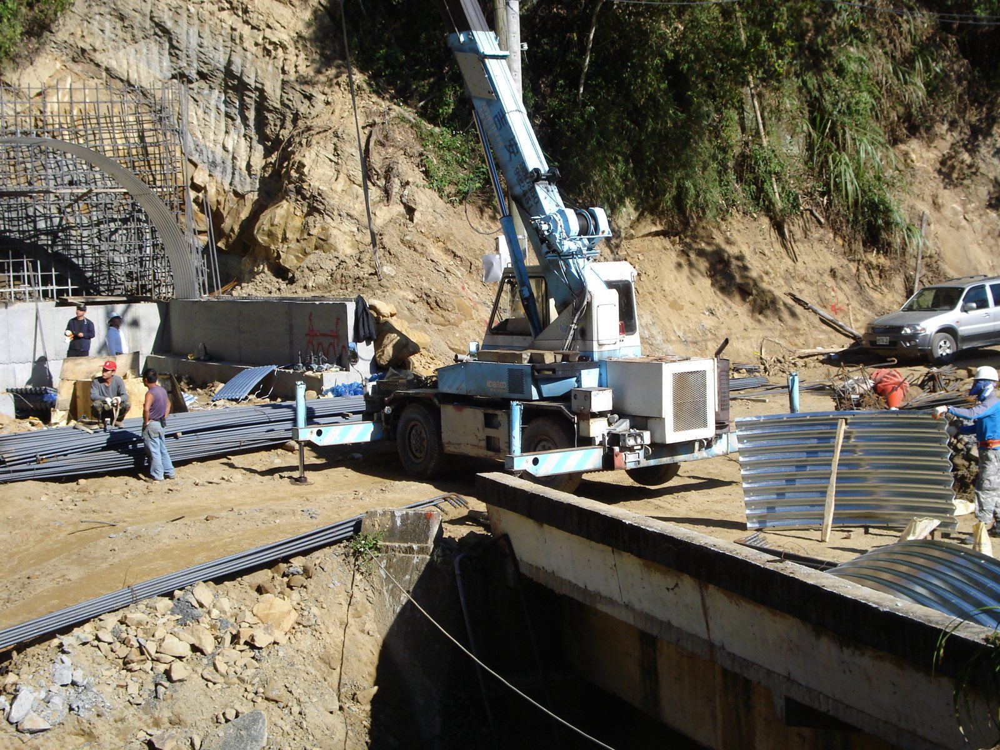
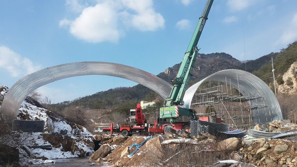
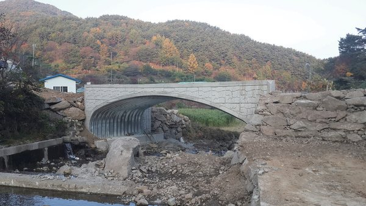

工程實績Project record시공 실적
波形鋼板結構在台灣已有施工實績。以下為 REXSTEEL 集團於台灣及韓國之代表案例。Corrugated plate structures have already been built in Taiwan. Representative REXSTEEL Group projects in Taiwan and Korea follow.파형강판 구조물은 대만에서 이미 시공 실적이 있습니다. REXSTEEL 그룹의 대만·한국 대표 사례입니다.
台灣山區道路 · 波形鋼板拱形結構Taiwan mountain road · corrugated plate arches대만 산간도로 · 파형강판 아치 구조물
大型波形鋼板（REX-B381）與中型波形鋼板拱形結構，於台灣山區道路施工。陡峭地形中以吊車吊裝鋼板拱、現場配筋後澆置混凝土，形成鋼板與鋼筋混凝土之複合結構。Large-profile (REX-B381) and medium-profile corrugated plate arches built on mountain roads in Taiwan. Plate arches were craned into place on steep terrain, reinforcement fixed on site and concrete placed, forming a steel–concrete composite structure.대형 파형강판(REX-B381)과 중형 파형강판 아치 구조물을 대만 산간도로에 시공했습니다. 급경사 지형에서 강판 아치를 크레인으로 세우고 현장에서 배근한 뒤 콘크리트를 타설해 강판·철근콘크리트 복합구조를 만들었습니다.










工程名稱、地點與年份依業主同意後揭露。Project names, locations and dates are disclosed with the owner's consent.공사명·위치·연도는 발주처 동의 후 공개합니다.
生態廊道、隧道、涵洞、橋梁Wildlife crossings, tunnels, culverts, bridges생태통로, 터널, 암거, 교량
REXSTEEL 及大韓鋼管集團自 1999 年起之韓國施工實績。REXSTEEL and Daehan Steel Pipe Group projects in Korea since 1999.REXSTEEL과 대한강관그룹의 1999년 이후 한국 시공 실적.




排水管與 PE 包覆管鋪設Drainage and PE-coated pipe installation배수관과 PE 피복관 부설


多國空軍採用之機堡襯板Shelter liners in service with several air forces여러 나라 공군이 쓰는 격납고 라이너
Wonder Arch 鋼拱襯板已供應多國機堡工程。基於國防保密，具體工程於 NDA 簽署後向合格單位說明。Wonder Arch liners have been supplied to shelter projects in several countries. For defense confidentiality, specific projects are described to qualified parties after NDA.Wonder Arch 라이너는 여러 나라 격납고 공사에 공급되었습니다. 국방 보안상 구체적 공사는 NDA 체결 후 자격 있는 기관에 설명합니다.